什么是 V8 引擎
V8 是为 Google Chrome 提供支持的 JavaScript 引擎的名称。当使用 Chrome 进行浏览时，它负责处理并执行 JavaScript。
V8 提供了执行 JavaScript 的运行时环境。DOM 和其他 Web 平台 API 则由浏览器提供。
JavaScript 引擎独立于托管它的浏览器。 此关键的特性推动了 Node.js 的兴起。 V8 于 2009 年被选为为 Node.js 提供支持的引擎，并且随着 Node.js 的爆炸性发展，V8 成为了现在为大量的服务器端代码（使用 JavaScript 编写）提供支持的引擎。
Node.js 的生态系统非常庞大，得益于此，V8 还为桌面应用程序（通过 Electron 等项目）提供支持。
渲染引擎（Rendering）
渲染引擎也被称为浏览器内核、浏览器引擎。主要负责取得页面内容、整理信息（应用CSS）、计算页面的显示方式，然后会输出到显示器或者打印机。渲染引擎的主要作用是将资源文件转化为用户可见的结果。
Firefox 使用的是 Gecko，这是 Mozilla 公司“自制”的渲染引擎。而 Safari 和 Chrome(28版本以前)浏览器使用的都是 Webkit。直到2013年，google 宣布不再使用苹果的webkit内核，开始使用webkit的分支内核Blink。
渲染引擎解析HTML文档，并将文档中的标签转化为dom节点树，即”内容树”。同时，它也会解析外部CSS文件以及style标签中的样式数据。这些样式信息连同 HTML 中的”可见内容”一道，被用于构建另一棵树——”渲染树( Render 树)”。
渲染树由一些带有视觉属性(如颜色、大小等)的矩形组成，这些矩形将按照正确的顺序显示在频幕上。
渲染树构建完毕之后，将会进入”布局”处理阶段，即为每一个节点分配一个屏幕坐标。再下一步就是绘制(painting)，即遍历 render 树，并使用UI后端层绘制每个节点。
值得注意的是，这个过程是逐步完成的，为了更好的用户体验，渲染引擎将会尽可能早的将内容呈现到屏幕上，并不会等到所有的html都解析完成之后再去构建和布局render树。它是解析完一部分内容就显示一部分内容，同时，可能还在通过网络下载其余内容。
WebKit 主流程示例：
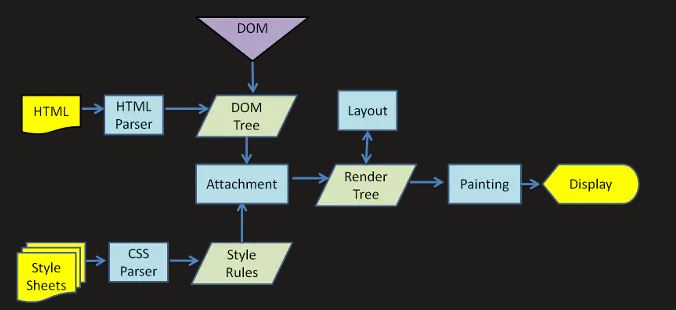
简单介绍 WebKit
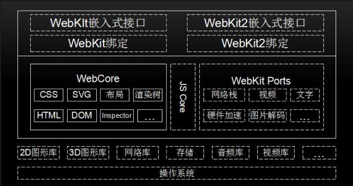
上图中实线框内模块是所有移植的共有部分，虚线框内不同的厂商可以自己实现。
- 操作系统：是管理和控制计算机硬件与软件资源的计算机程序，是直接运行在“裸机”上的最基本的系统软件，任何其他软件都必须在操作系统的支持下才能运行。WebKit也是在操作系统上工作的。
- 第三方库，为了WebKit提供支持，如图形库、网络库、视频库等。
- WebCore 是各个浏览器使用的共享部分，包括HTML解析器、CSS解析器、DOM和SVG等。JavaScriptCore是WebKit的默认引擎，在谷歌系列产品中被替换为V8引擎。WebKit Ports是WebKit中的非共享部分，由于平台差异、第三方库和需求的不同等原因，不同的移植导致了WebKit不同版本行为不一致，它是不同浏览器性能和功能差异的关键部分。
- WebKit嵌入式编程接口，供浏览器调用，与移植密切相关，不同的移植有不同的接口规范。
- 测试用例，包括布局测试用例和性能测试用例，用来验证渲染结果的正确性。
网页渲染流程
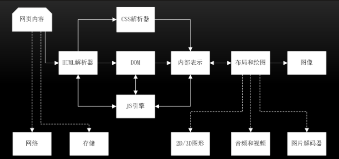
首先是网页内容，输入到HTML解析器，HTML解析器解析，然后构建DOM树，在这期间如果遇到JavaScript代码则交给JavaScript引擎处理；如果来自CSS解析器的样式信息，构建一个内部绘图模型。该模型由布局模块计算模型内部各个元素的位置和大小信息，最后由绘图模块完成从该模型到图像的绘制。在网页渲染的过程中，大致可分为下面3个阶段。
-
从输入 URL 到生成 DOM 树
- 地址栏输入 URL, WebKit 调用资源加载器加载相应资源
- 加载器依赖网络模块建立连接，发送请求并接收答复
- WebKit 接收各种网页或者资源模型，其中某些资源可能同步或异步获取
- 网页交给 HTML 解析器转变为词语
- 解释器根据词语构建节点，形成 DOM 树
- 如果节点是 JS 代码，调用 JS 引擎解释并执行
- JS 代码可能会修改 DOM 树结构
- 如果节点依赖其他资源，如图片、css视频等，调用资源加载器加载它们。这个过程时异步加载的，不会阻碍当前 DOM 树的继续创建。如果是 JS 资源如 URL（没有标记异步方式），则需要停止当前 DOM 树创建，直到 JS 加载并被 JS 引擎执行后才继续 DOM 树的创建
-
从 DOM 树到构建 WebKit 绘图上下文
- css 文件被 css 解释器解释成内部表示
- css 解释器完成工作后，在 DOM 树上附加样式信息，生成 RenderObject 树
- RenderObject 节点在创建的同时，WebKit 会根据网页层次结构构建 RenderLayer 树，同时构建一个虚拟绘图上下文。
-
绘图上下文到最终图像呈现
- 绘图上下文是一个与平台无关的抽象类，它将每个绘图操作桥接到不同的具体实现类，也就是绘图具体实现类
- 绘图实现类也可能有简单的实现，也可能有复杂的实现，软件渲染、硬件渲染、合成渲染等
- 绘图实现类将 2D 图形库或者 3D 实现库绘制结果保存，交给浏览器界面进行展示
上述是一个完整的渲染过程，现代网页很多都是动态的，随着网页与用户的交互，浏览器需要不断的重复渲染过程。
JavaScript 引擎
JavaScript 本质是一种解释性语言，需要一边执行一边解析。而编译型语言是在完成编译后直接执行，有更快的执行速度。
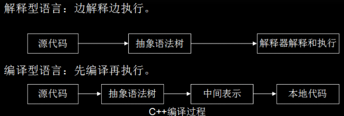
JS是解释型语言，为了提高性能，引入了Java虚拟机和C++编译器中的众多技术。现在JavaScript引擎的执行过程大致是：
源代码 ——> 抽象语法树 ——> 字节码 ——> JIT ——> 本地代码
注：V8引擎没有字节码
一段代码的抽象语法树示例如下：
1 | function demo(name) { |
抽象语法树：
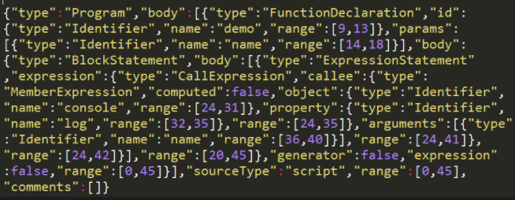
V8 更加直接的将抽象语法树通过 JIT 技术转换成本地代码，放弃了在字节码阶段可以进行的一些性能优化，但保证了执行速度。在 V8 生成本地代码后，也会通过 Profile 采集一些信息，来优化本地代码。极大减少了转换时间。
JIT(Just In Time Compiler)，即时编译器。是针对解释器语言的一种优化手段。
但是在2017年4月底，v8 的 5.9 版本发布了，新增了一个 Ignition 字节码解释器，将默认启动，从此之后将与JSCore有大致相同的流程。做出这一改变的原因为：（主要动机）减轻机器码占用的内存空间，即牺牲时间换空间；提高代码的启动速度；对 v8 的代码进行重构，降低 v8 的代码复杂度(V8 Ignition：JS 引擎与字节码的不解之缘 - CNode技术社区)。
JavaScript的性能和C相比还有不小的距离，可预见的未来估计也只能接近它，而不是与它相比，这从语言类型上已经决定。下面将对V8引擎进行更为细致的介绍。
V8 引擎
V8引擎是一个JavaScript引擎实现，最初由一些语言方面专家设计，后被谷歌收购，随后谷歌对其进行了开源。V8使用C++开发，，在运行JavaScript之前，相比其它的JavaScript的引擎转换成字节码或解释执行，V8将其编译成原生机器码（IA-32, x86-64, ARM, or MIPS CPUs），并且使用了如内联缓存（inline caching）等方法来提高性能。有了这些功能，JavaScript程序在V8引擎下的运行速度媲美二进制程序。V8支持众多操作系统，如windows、linux、android等，也支持其他硬件架构，如IA32,X64,ARM等，具有很好的可移植和跨平台特性。
V8项目代码结构如下：
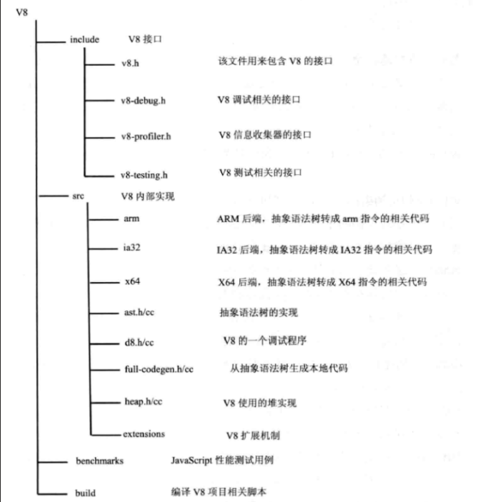
数据表示
JavaScript是一种动态类型语言，在编译时并不能准确知道变量的类型，只可以在运行时确定，这就不像c++或者java等静态类型语言，在编译时候就可以确切知道变量的类型。然而，在运行时计算和决定类型，会严重影响语言性能，这也就是JavaScript运行效率比C++或者JAVA低很多的原因之一。
在C++中，源代码需要经过编译才能执行，在生成本地代码的过程中，变量的地址和类型已经确定，运行本地代码时利用数组和位移就可以存取变量和方法的地址，不需要再进行额外的查找，几个机器指令即可完成，节省了确定类型和地址的时间。由于JavaScript是无类型语言，那就不能像c++那样在执行时已经知道变量的类型和地址，需要临时确定。JavaScript 和C++有以下几个区别：
- 编译确定位置，C++编译阶段确定位置偏移信息，在执行时直接存取，JavaScript在执行阶段确定，而且执行期间可以修改对象属性；
- 偏移信息共享，C++有类型定义，执行时不能动态改变，可共享偏移信息，JavaScript每个对象都是自描述，属性和位置偏移信息都包含在自身的结构中；
- 偏移信息查找，C++查找偏移地址很简单，在编译代码阶段，对使用的某类型成员变量直接设置偏移位置，JavaScript中使用一个对象，需要通过属性名匹配才能找到相应的值，需要更多的操作。
在代码执行过程中，变量的存取是非常普遍和频繁的，通过偏移量来存取，使用少数两个汇编指令就能完成，如果通过属性名匹配则需要更多的汇编指令，也需要更多的内存空间。示例如下：
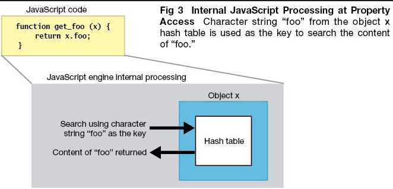
在JavaScript中，除boolean，number，string，null，undefined这个五个简单数据类型外，其他的都是对象，V8使用一种特殊的方式来表示它们，进而优化JavaScript的内部表示问题。
在V8中，数据的内部表示由数据的实际内容和数据的句柄构成。数据的实际内容是变长的，类型也是不同的；句柄固定大小，包含指向数据的指针。这种设计可以方便V8进行垃圾回收和移动数据内容，如果直接使用指针的话就会出问题或者需要更大的开销，使用句柄的话，只需修改句柄中的指针即可，使用者使用的还是句柄，指针改动是对使用者透明的。
除少数数据(如整型数据)由handle本身存储外，其他内容限于句柄大小和变长等原因，都存储在堆中。整数直接从value中取值，然后使用一个指针指向它，可以减少内存的占用并提高访问速度。一个句柄对象的大小是4字节(32位设备)或者8字节(64位设备)，而在JavaScriptCore中，使用的8个字节表示句柄。在堆中存放的对象都是4字节对齐的，所以它们指针的后两位是不需要的，V8用这两位表示数据的类型，00为整数，01为其他。
JavaScript对象在V8中的实现包含三个部分：隐藏类指针，这是v8为JavaScript对象创建的隐藏类；属性值表指针，指向该对象包含的属性值；元素表指针，指向该对象包含的属性。
工作过程
前面有过介绍，V8引擎在执行JavaScript的过程中，主要有两个阶段：编译和运行，与C++的执行前完全编译不同的是，JavaScript需要在用户使用时完成编译和执行。在V8中，JavaScript相关代码并非一下完成编译的，而是在某些代码需要执行时，才会进行编译，这就提高了响应时间，减少了时间开销。在V8引擎中，源代码先被解析器转变为抽象语法树(AST)，然后使用JIT编译器的全代码生成器从AST直接生成本地可执行代码。这个过程不同于JAVA先生成字节码或中间表示，减少了AST到字节码的转换时间，提高了代码的执行速度。但由于缺少了转换为字节码这一中间过程，也就减少了优化代码的机会。
V8引擎编译本地代码时使用的主要类如下所示：
- Script：表示JavaScript代码，即包含源代码，又包含编译之后生成的本地代码，即是编译入口，又是运行入口；
- Compiler：编译器类，辅组Script类来编译生成代码，调用解释器(Parser)来生成AST和全代码生成器，将AST转变为本地代码；
- AstNode：抽象语法树节点类，是其他所有节点的基类，包含非常多的子类，后面会针对不同的子类生成不同的本地代码；
- AstVisitor：抽象语法树的访问者类，主要用来遍历异构的抽象语法树；
- FullCodeGenerator：AstVisitor类的子类，通过遍历AST来为JavaScript生成本地可执行代码。
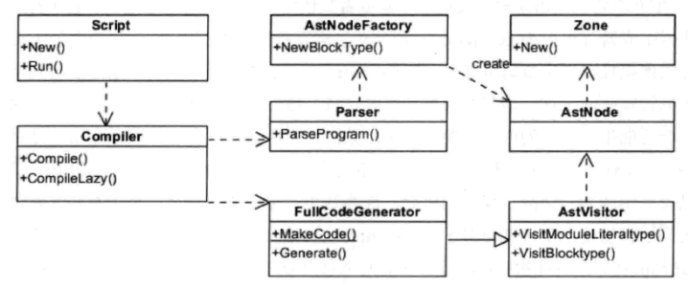
JavaScript代码编译的过程大致为：Script类调用Compiler类的Compile函数为其生成本地代码。Compile函数先使用Parser类生成AST，再使用FullCodeGenerator类来生成本地代码。本地代码与具体的硬件平台密切相关，FullCodeGenerator使用多个后端来生成与平台相匹配的本地汇编代码。由于FullCodeGenerator通过遍历AST来为每个节点生成相应的汇编代码，缺失了全局视图，节点之间的优化也就无从谈起。
在执行编译之前，V8会构建众多全局对象并加载一些内置的库（如math库），来构建一个运行环境。而且在JavaScript源代码中，并非所有的函数都被编译生成本地代码，而是延迟编译，在调用时才会编译。
由于V8缺少了生成中间代码这一环节，缺少了必要的优化，为了提升性能，V8会在生成本地代码后，使用数据分析器(profiler)采集一些信息，然后根据这些数据将本地代码进行优化，生成更高效的本地代码，这是一个逐步改进的过程。同时，当发现优化后代码的性能还不如未优化的代码，V8将退回原来的代码，也就是优化回滚。下面介绍一下运行阶段，该阶段使用的主要类如下所示：
- Script：表示JavaScript代码，即包含源代码，又包含编译之后生成的本地代码，即是编译入口，又是运行入口；
- Execution：运行代码的辅组类，包含一些重要函数，如Call函数，它辅组进入和执行Script代码；
- JSFunction：需要执行的JavaScript函数表示类；
- Runtime：运行这些本地代码的辅组类，主要提供运行时所需的辅组函数，如：属性访问、类型转换、编译、算术、位操作、比较、正则表达式等；
- Heap：运行本地代码需要使用的内存堆类；
- MarkCompactCollector：垃圾回收机制的主要实现类，用来标记、清除和整理等基本的垃圾回收过程；
- SweeperThread：负责垃圾回收的线程。
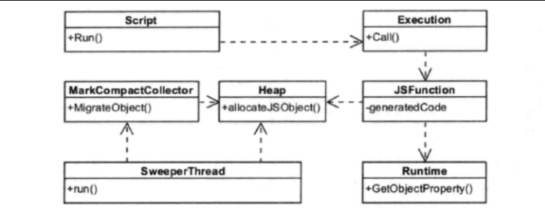
先根据需要编译和生成这些本地代码，也就是使用编译阶段那些类和操作。在V8中，函数是一个基本单位，当某个JavaScript函数被调用时，V8会查找该函数是否已经生成本地代码，如果已经生成，则直接调用该函数。否则，V8引擎会生成属于该函数的本地代码。这就节约了时间，减少了处理那些使用不到的代码的时间。其次，执行编译后的代码为JavaScript构建JS对象，这需要Runtime类来辅组创建对象，并需要从Heap类分配内存。再次，借助Runtime类中的辅组函数来完成一些功能，如属性访问等。最后，将不用的空间进行标记清除和垃圾回收。
优化回滚
因为V8是基于AST直接生成本地代码，没有经过中间表示层的优化，所以本地代码尚未经过很好的优化。于是，在2010年，V8引入了新的编译器-Crankshaft，它主要针对热点函数进行优化，基于JavaScript源代码开始分析而非本地代码，同时构建Hydroger图并基于此来进行优化分析。
Crankshaft编译器为了性能考虑，通常会做出比较乐观和大胆的预测—代码稳定且变量类型不变，所以可以生成高效的本地代码。但是，鉴于JavaScript的一个弱类型的语言，变量类型也可能在执行的过程中进行改变，鉴于这种情况，V8会将该编译器做的想当然的优化进行回滚，称为优化回滚。
示例如下：
1 | var counter = 0; |
该函数被调用多次之后，V8引擎可能会触发Crankshaft编译器对其进行优化，而优化代码认为示例代码的类型信息都已经被确定。但，由于尚未真正执行到new Date()这个地方，并未获取unknown这个变量的类型，V8只得将该部分代码进行回滚。优化回滚是一个很耗时的操作，在写代码过程中，尽量不要触发优化该操作。
在最近发布的 V8 5.9 版本中，新增了一个 Ignition 字节码解释器，TurboFan 和 Ignition 结合起来共同完成JavaScript的编译。这个版本中消除 Cranshaft 这个旧的编译器，并让新的 Turbofan 直接从字节码来优化代码，并当需要进行反优化的时候直接反优化到字节码，而不需要再考虑 JS 源代码。
隐藏类与内嵌缓存
隐藏类
在执行C++代码时，仅凭几个指令即可根据偏移信息获取变量信息，而JavaScript里需要通过字符串匹配来查找属性值的，这就需要更多的操作才能访问到变量信息，而代码量变量存取是十分频繁的，这也就制约了JavaScript的性能。V8借用了类和偏移位置的思想，将本来通过属性名匹配来访问属性值的方法进行了改进，使用类似C++编译器的偏移位置机制来实现，这就是隐藏类。
隐藏类将对象划分成不同的组，对于组内对象拥有相同的属性名和属性值的情况，将这些组的属性名和对应的偏移位置保存在一个隐藏类中，组内所有对象共享该信息。同时，也可以识别属性不同的对象。示例如下：
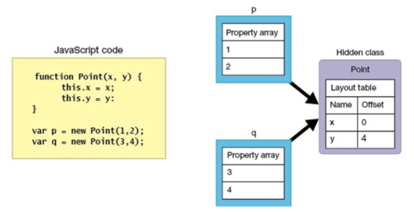
使用Point构造了两个对象p和q，这两个对象具有相同的属性名，V8将它们归为同一个组，也就是隐藏类，这些属性在隐藏类中有相同的偏移值，p和q共享这一信息，进行属性访问时，只需根据隐藏类的偏移值即可。由于JavaScript是动态类型语言，在执行时可以更改变量的类型，如果上述代码执行之后，执行q.z=2，那么p和q将不再被认为是一个组，q将是一个新的隐藏类。
内嵌缓存
正常访问对象属性的过程是：首先获取隐藏类的地址，然后根据属性名查找偏移值，然后计算该属性的地址。虽然相比以往在整个执行环境中查找减小了很大的工作量，但依然比较耗时。能不能将之前查询的结果缓存起来，供再次访问呢？当然是可行的，这就是内嵌缓存。
内嵌缓存的大致思路就是将初次查找的隐藏类和偏移值保存起来，当下次查找的时候，先比较当前对象是否是之前的隐藏类，如果是的话，直接使用之前的缓存结果，减少再次查找表的时间。当然，如果一个对象有多个属性，那么缓存失误的概率就会提高，因为某个属性的类型变化之后，对象的隐藏类也会变化，就与之前的缓存不一致，需要重新使用以前的方式查找哈希表。
内存管理
Node中通过JavaScript使用内存时就会发现只能使用部分内存（64位系统下约为1.4 GB，32位系统下约为0.7 GB），其深层原因是 V8 垃圾回收机制的限制所致（如果可使用内存太大，V8在进行垃圾回收时需耗费更多的资源和时间，严重影响JS的执行效率）。下面对内存管理进行介绍。
内存的管理组要由分配和回收两个部分构成。V8的内存划分如下：
-
Zone：管理小块内存。其先自己申请一块内存，然后管理和分配一些小内存，当一块小内存被分配之后，不能被Zone回收，只能一次性回收Zone分配的所有小内存。当一个过程需要很多内存，Zone将需要分配大量的内存，却又不能及时回收，会导致内存不足情况。
-
堆：管理JavaScript使用的数据、生成的代码、哈希表等。为方便实现垃圾回收，堆被分为三个部分：
年轻分代：为新创建的对象分配内存空间，经常需要进行垃圾回收。为方便年轻分代中的内容回收，可再将年轻分代分为两半，一半用来分配，另一半在回收时负责将之前还需要保留的对象复制过来。
年老分代：根据需要将年老的对象、指针、代码等数据保存起来，较少地进行垃圾回收。
大对象：为那些需要使用较多内存对象分配内存，当然同样可能包含数据和代码等分配的内存，一个页面只分配一个对象。
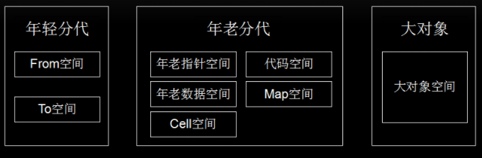
垃圾回收
V8 使用了分代和大数据的内存分配，在回收内存时使用精简整理的算法标记未引用的对象，然后消除没有标记的对象，最后整理和压缩那些还未保存的对象，即可完成垃圾回收。
在V8中，使用较多的是年轻分代和年老分代。年轻分代中的对象垃圾回收主要通过Scavenge算法进行垃圾回收。在Scavenge的具体实现中，主要采用了Cheney算法：通过复制的方式实现的垃圾回收算法。它将堆内存分为两个 semispace，一个处于使用中（From空间），另一个处于闲置状态（To空间）。当分配对象时，先是在From空间中进行分配。当开始进行垃圾回收时，会检查From空间中的存活对象，这些存活对象将被复制到To空间中，而非存活对象占用的空间将会被释放。完成复制后，From空间和To空间的角色发生对换。在垃圾回收的过程中，就是通过将存活对象在两个 semispace 空间之间进行复制。年轻分代中的对象有机会晋升为年老分代，条件主要有两个：一个是对象是否经历过Scavenge回收，一个是To空间的内存占用比超过限制。
对于年老分代中的对象，由于存活对象占较大比重，再采用上面的方式会有两个问题：一个是存活对象较多，复制存活对象的效率将会很低；另一个问题依然是浪费一半空间的问题。为此，V8在年老分代中主要采用了Mark-Sweep（标记清除）标记清除和Mark-Compact（标记整理）相结合的方式进行垃圾回收。
快照
在V8引擎启动时，需要构建JavaScript运行环境，需要加载很多内置对象，同时也需要建立内置的函数，如Array，String，Math等。为了使V8更加整洁，加载对象和建立函数等任务都是使用JavaScript文件来实现的，V8引擎负责提供机制来支持，就是在编译和执行JavaScript前先加载这些文件。
V8引擎需要编译和执行这些内置的JavaScript代码，同时使用堆等来保存执行过程中创建的对象、代码等，这些都需要时间。为此，V8引入了快照机制。将这些内置的对象和函数加载之后的内存保存并序列化。序列化之后的结果很容易反序列化，经过快照机制的启动时间可以缩减几毫秒。快照机制也可以将一些开发者认为需要的JavaScript文件序列化，以减少处理时间。不过快照机制的加载的代码不能被CrankShaft这样的编译器优化，可能会存在性能问题。
V8 VS JavaScriptCore
JavaScriptCore引擎是WebKit中默认的JavaScript引擎，也是苹果开源的一个项目，应用较为广泛。最初，性能不是很好，从2008年开始了一系列的优化，重新实现了编译器和字节码解释器，使得引擎的性能有较大的提升。随后内嵌缓存、基于正则表达式的JIT、简单的JIT及字节码解释器等技术引入进来，JavaScriptCore引擎也在不断的迭代和发展。
V8引擎自诞生之日起就以性能优化作为目标，引入了众多新技术，极大了带动了整个业界JavaScript引擎性能的快速发展。总的来说，V8引擎较为激进，青睐可以提高性能的新技术，而JavaScriptCore引擎较为稳健，渐进式的改变着自己的性能。总的来说JavaScript引擎工作流程（包含v8和JavaScriptCore）如下所示：
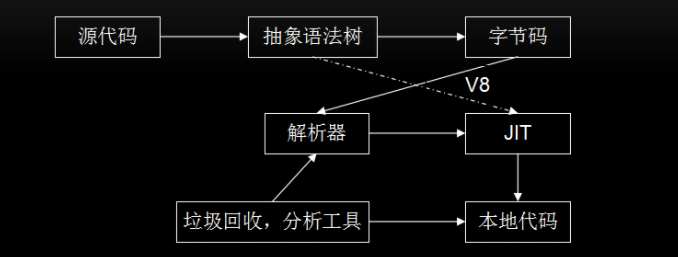
JavaScriptCore 的大致流程为：源代码 ——> 抽象语法树 ——> 字节码 ——> JIT ——> 本地代码。
JavaScriptCore与V8有一些不同之处，其中最大的不同就是新增了字节码的中间表示，并加入了多层JIT编译器（如：简单JIT编译器、DFG JIT编译器、LLVM等）优化性能，不停的对本地代码进行优化。(在 V8 的 5.9 版本中，新增了一个 Ignition 字节码解释器，TurboFan 和 Ignition 结合起来共同完成JavaScript的编译，此后 V8 将与 JavaScriptCore 有大致相同的流程，Node 8.0中 V8 版本为 5.8)
还有就是在数据表示方面，V8在不同的机器上使用与机器位数相匹配的数据表示，而在JavaScriptCore中句柄都是使用64位表示，其可以表示更大范围的数字，所以即使在32位机器上，浮点类型同样可以保存在句柄中，不再需要访问堆中的数据，当也会占用更多的空间。
功能扩展
JavaScript引擎的主要功能是解析和执行JavaScript代码，往往不能满足使用者多样化的需要，那么就可以增加扩展以提升它的能力。V8引擎有两种扩展机制：绑定和扩展。
绑定机制
使用IDL文件或接口文件生成绑定文件，将这些文件同V8引擎一起编译。WebKit中使用IDL来定义JavaScript，但又与IDL有所不同，有一些改变。定义一个新的接口的步骤大致如下：
-
定义新的接口文件，可以在JavaScript代码进行调用，如mymodule.MyObj.myAttr；
1
2
3
4
5
6
7
8module mymodule {
interface [
InterfaceName = MyObject
] MyObj {
readonly attribute long myAttr;
DOMString myMethod (DOMString myArg);
};
} -
按照引擎定义的标准接口为基础实现接口类，生成JavaScript引擎所需的绑定文件。WebKit提供了工具帮助生成所需的绑定类，根据引擎不同和引擎开发语言的不同而有所差异。V8引擎会为上述示例代码生成 v8MyObj.h (MyObj类具体的实现代码)和 V8MyObj.cpp (桥接代码，辅组注册桥接的函数到V8引擎)两个绑定文件。
JavaScript引擎绑定机制需要将扩展代码和JavaScript引擎一块编译和打包，不能根据需要在引擎启动后再动态注入这些本地代码。在实际WEB开发中，开发者都是基于现有浏览器的，根本不可能介入到JavaScript引擎的编译中，绑定机制有很大的局限性，但其非常高效，适用于对性能要求较高的场景。
Extension机制
通过V8的基类Extension进行能力扩展，无需和V8引擎一起编译，可以动态为引擎增加功能特性，具有很大的灵活性。
Extension机制的大致思路就是，V8提供一个基类Extension和一个全局注册函数，要想扩展JavaScript能力，需要经过以下步骤：
1 | class MYExtension : public v8::Extension { |
- 基于Extension基类构建一个它的子类，并实现它的虚函数—GetNativeFunction，根据参数name来决定返回实函数
- 创建一个该子类的对象，并通过注册函数将该对象注册到V8引擎，当JavaScript调用’my’函数时就可被调用到。
Extension机制是调用V8的接口注入新函数，动态扩展非常方便，但没有绑定机制高效，适用于对性能要求不高的场景。
总结
在过去几年，JavaScript在很多领域得到了广泛的应用，然而限于JavaScript语言本身的不足，执行效率不高。Google也推出了一些JavaScript网络应用，如Gmail、Google Maps及Google Docs office等。这些应用的性能不仅受到服务器、网络、渲染引擎以及其他诸多因素的影响，同时也受到JavaScript本身执行速度的影响。然而既有的JavaScript引擎无法满足新的需求，而性能不佳一直是网络应用开发者最关心的。Google就开始了V8引擎的研究，将一系列新技术引入JavaScript引擎中，大大提高了JavaScript的执行效率。相信随着V8引擎的不断发展，JavaScript也会有更广泛的应用场景，前端工程师也会有更好的未来！
那么结合上面对于V8引擎的介绍，我们在编程中应注意：
- 类型。对于函数，JavaScript是一种动态类型语言，JavaScriptCore和V8都使用隐藏类和内嵌缓存来提高性能，为了保证缓存命中率，一个函数应该使用较少的数据类型；对于数组，应尽量存放相同类型的数据，这样就可以通过偏移位置来访问。
- 数据表示。简单类型数据（如整型）直接保存在句柄中，可以减少寻址时间和内存占用，如果可以使用整数表示的，尽量不要用浮点类型。
- 内存。虽然JavaScript语言会自己进行垃圾回收，但我们也应尽量做到及时回收不用的内存，对不再使用的对象设置为null或使用delete方法来删除(使用delete方法删除会触发隐藏类新建，需要更多的额外操作)。
- 优化回滚。在执行多次之后，不要出现修改对象类型的语句，尽量不要触发优化回滚，否则会大幅度降低代码的性能。
- 新机制。使用JavaScript引擎或者渲染引擎提供的新机制和新接口提高性能。
参考
If you like this blog or find it useful for you, you are welcome to comment on it. You are also welcome to share this blog, so that more people can participate in it. If the images used in the blog infringe your copyright, please contact the author to delete them. Thank you !